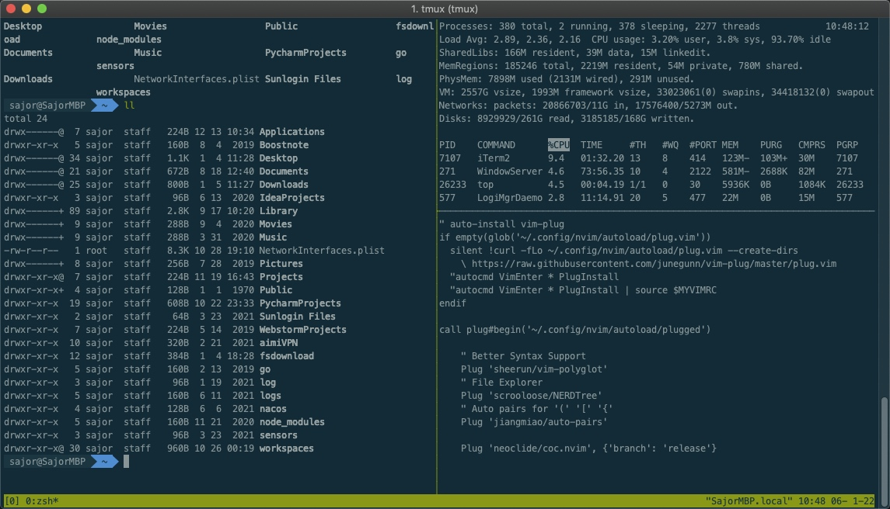

安装
使用包管理工具
# Ubuntu 或 Debian
$ sudo apt-get install tmux
# CentOS 或 Fedora
$ sudo yum install tmux
# Mac
$ brew install tmux
session 会话管理
1. 新建会话
第一个启动的 Tmux 窗口，编号是0，第二个窗口的编号是1，以此类推。这些窗口对应的会话，就是 0 号会话、1 号会话。
使用编号区分会话，不太直观，更好的方法是为会话起名。
$ tmux new -s <session-name>
上面命令新建一个指定名称的会话。
2. 分离会话
在 Tmux 窗口中，按下Ctrl+b d或者输入tmux detach命令，就会将当前会话与窗口分离。
$ tmux detach
上面命令执行后，就会退出当前 Tmux 窗口，但是会话和里面的进程仍然在后台运行。
tmux ls命令可以查看当前所有的 Tmux 会话。
$ tmux ls
# or
$ tmux list-session
3. 接入会话
tmux attach命令用于重新接入某个已存在的会话。
# 使用会话编号
$ tmux attach -t 0
# 使用会话名称
$ tmux attach -t <session-name>
4. 杀死会话
tmux kill-session命令用于杀死某个会话。
# 使用会话编号
$ tmux kill-session -t 0
# 使用会话名称
$ tmux kill-session -t <session-name>
5. 切换会话
tmux switch命令用于切换会话。
# 使用会话编号
$ tmux switch -t 0
# 使用会话名称
$ tmux switch -t <session-name>
6. 重命名会话
tmux rename-session命令用于重命名会话。
$ tmux rename-session -t 0 <new-name>
上面命令将0号会话重命名。
7. 会话快捷键
下面是一些会话相关的快捷键。
Ctrl+b d：分离当前会话。
Ctrl+b s：列出所有会话。
Ctrl+b $：重命名当前会话。
session 总结
session 在 tmux 操作当中非常重要，希望你可以熟练的使用以上操作：
新建 session -> 离开 session -> 查看 session 列表 -> 进入 session -> 关闭 session -> 不同 session 之间的切换 -> 重命名 session
tmux new -s <session-name>
tmux detach # Ctrl+b d
tmux ls # Ctrl+b s
tmux attach -t <session-name>
tmux kill-session -t <session-name> # Ctrl+d
tmux switch -t <session-name>
tmux rename-session -t <old-name> <new-name> # Ctrl+b $
pane 窗格管理
Tmux 可以将窗口分成多个窗格（pane），每个窗格运行不同的命令。以下命令都是在 Tmux 窗口中执行。

窗格快捷键
Ctrl+b %：划分左右两个窗格。
Ctrl+b "：划分上下两个窗格。
Ctrl+b <arrow key>：光标切换到其他窗格。<arrow key>是指向要切换到的窗格的方向键，比如切换到下方窗格，就按方向键↓。
Ctrl+b ;：光标切换到上一个窗格。
Ctrl+b o：光标切换到下一个窗格。
Ctrl+b {：当前窗格与上一个窗格交换位置。
Ctrl+b }：当前窗格与下一个窗格交换位置。
Ctrl+b Ctrl+o：所有窗格向前移动一个位置，第一个窗格变成最后一个窗格。
Ctrl+b Alt+o：所有窗格向后移动一个位置，最后一个窗格变成第一个窗格。
Ctrl+b x：关闭当前窗格。
Ctrl+b !：将当前窗格拆分为一个独立窗口。
Ctrl+b z：当前窗格全屏显示，再使用一次会变回原来大小。
Ctrl+b Ctrl+<arrow key>：按箭头方向调整窗格大小。
Ctrl+b q：显示窗格编号。
window 窗口管理
窗口快捷键
Ctrl+b c：创建一个新窗口，状态栏会显示多个窗口的信息。
Ctrl+b p：切换到上一个窗口（按照状态栏上的顺序）。
Ctrl+b n：切换到下一个窗口。
Ctrl+b <number>：切换到指定编号的窗口，其中的<number>是状态栏上的窗口编号。
Ctrl+b w：从列表中选择窗口。
Ctrl+b ,：窗口重命名。
其他命令
# 列出所有快捷键，及其对应的 Tmux 命令
$ tmux list-keys
# 列出所有 Tmux 命令及其参数
$ tmux list-commands
# 列出当前所有 Tmux 会话的信息
$ tmux info
# 重新加载当前的 Tmux 配置
$ tmux source-file ~/.tmux.conf
本文由 Sajor
创作，采用 知识共享署名4.0 国际许可协议进行许可
本站文章除注明转载/出处外，均为本站原创或翻译，转载前请务必署名
最后编辑时间为: 2021-12-30T13:52:22+08:00